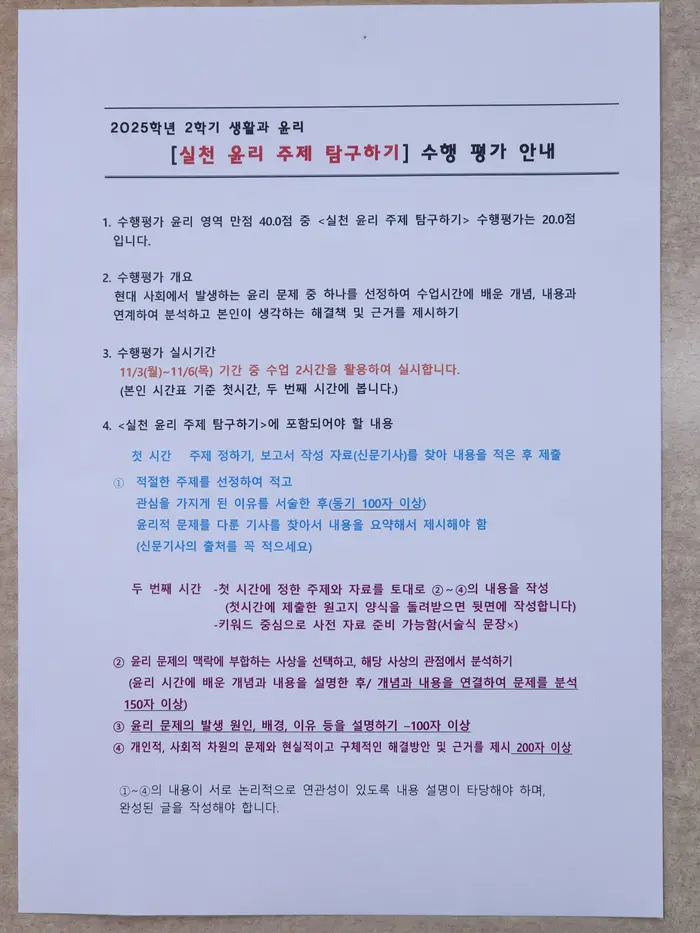
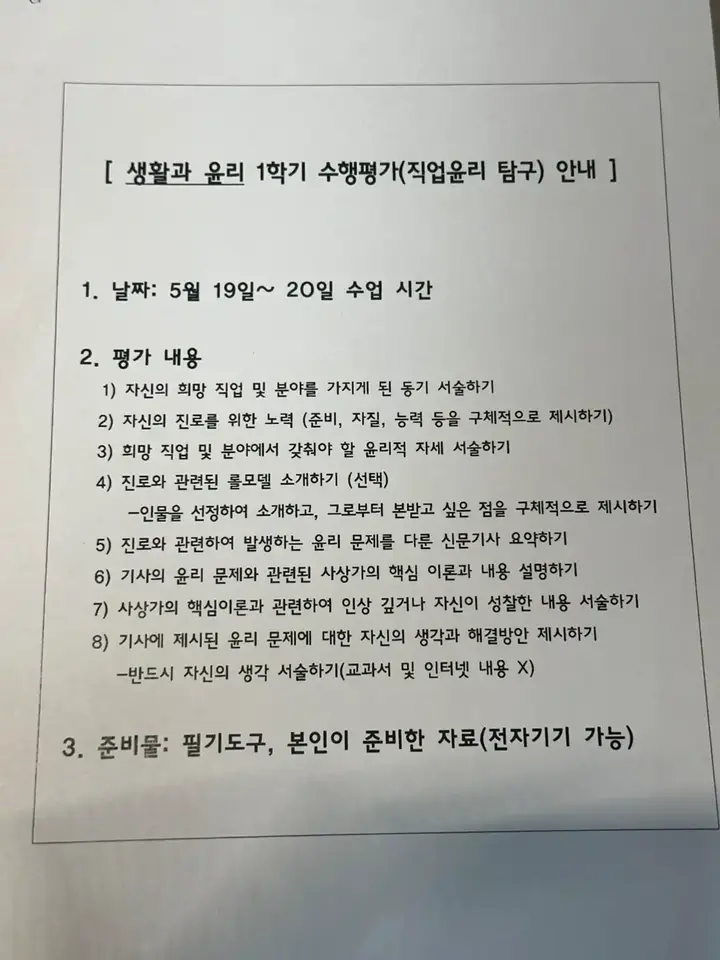

{% extends "base.html" %}
{% block content %}
    <h1 data-content="생명과 윤리">
        생명과 윤리
    </h1>
    <h4 data-content="현재 진행중 · 예정된 수행평가">
        현재 진행중 · 예정된 수행평가
    </h4>
    <li>현재 진행중 · 예정된 수행평가가 없습니다.</li>
    <details>
        <summary>
            완료된 생명과 윤리 수행평가 보기 [ 펼치기 · 접기 ]
        </summary>
        <li>실천 윤리 주제 탐구하기</li>
        
        <li>직업 윤리 탐구하기</li>
        
    </details>
    <button onclick="location.href='/'">홈으로</button>
{% endblock %}